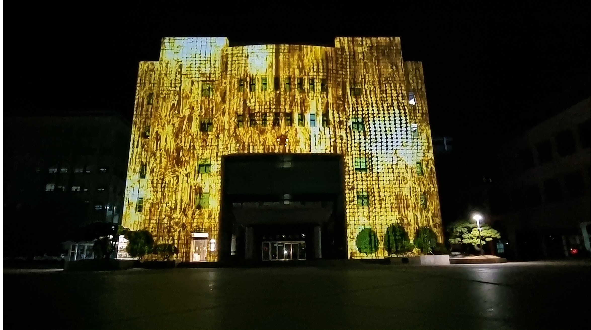
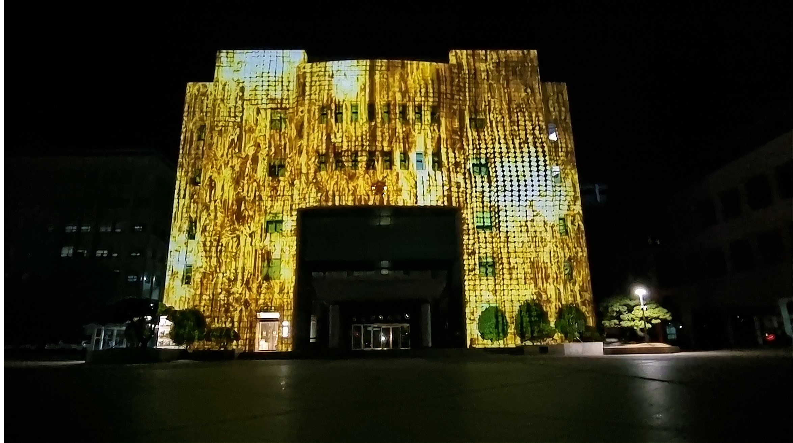

Ulsan Bangudae Petroglyphs 50th Anniversary“Petroglyphs and Sacred Space”
- Media artist : 유환 (YOUHWAN)
- Sound: Neo303
- Art production company: Aplan company
- Venue: Ulsan City Council
vestiges'
In the cycle where countless traces are erased and born anew, we exist
within the irony of both forgetting and learning. All emotions and the
marks of time, too, dwell within the irony of essence.
 
